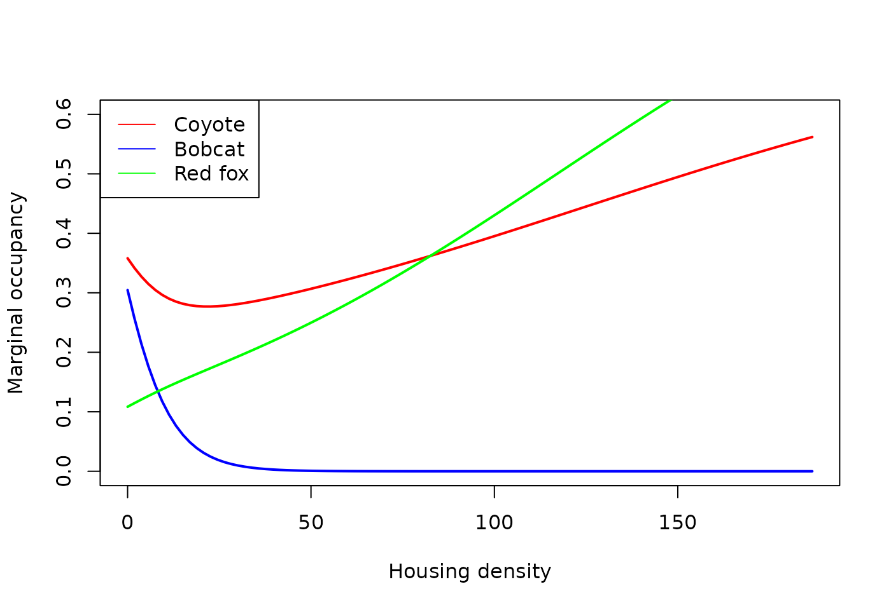

vignettes/occuMulti.Rmd
occuMulti.RmdThe Rota et al. (2016) occupancy model is designed for presence/absence datasets with two or more (potentially) interacting species. The model allows for estimation of occupancy probabilities and the strength of interactions between species, as well as covariate effects on these parameters. The model generalizes the standard single-species occupancy model from MacKenzie et al. (2002).
The model assumes the latent occupancy state at site for a set of potentially interacting species is a vector of length containing a sequence of the values 0 or 1. For example, when , the possible states are [11], [10], [01], or [00], corresponding to both species present, only species 1 or species 2 present, or both species absent, respectively. The latent state modeled as a multivariate Bernoulli random variable: where is a vector of length containing the probability of each possible combination of 0s and 1s, such that .
For , the corresponding natural parameters, , are
The natural parameters can then be modeled as linear functions of covariates.
The observation process is similar to the standard single-species
occupancy model, except that the observations
at site
on occasion
are vectors of length
and there are independent values of detection probability
for each species
:
See Rota et al.
(2016) for more details on model structure. In
unmarked, the model can be fit with the
occuMulti function.
We will start with a simple analysis using presence/absence data from camera traps for three species: coyote, red fox, and bobcat. The data are a simplified version of the data used in Rota et al. (2016), with the data collapsed three into three-week long time periods.
The dataset is included with unmarked and is called
MesoCarnivores. First, we need to load in the dataset,
which is a list with several components.
## [1] "bobcat" "coyote" "redfox" "sitecovs"Presence/absence matrices for the three species are in list elements
bobcat, coyote, and redfox, and
sitecovs contains the site-level covariate data.
Using this information, we will create an
unmarkedFrameOccuMulti object. You can get more information
by looking at the help file for unmarkedFrameOccuMulti:
?unmarkedFrameOccuMultiFirst we combine the detection data for the 3 species into one named list. These names will be used throughout the multispecies analysis, so pick useful ones.
ylist <- list(bobcat=MesoCarnivores$bobcat, coyote=MesoCarnivores$coyote,
redfox=MesoCarnivores$redfox)
lapply(ylist, head)## $bobcat
## X1 X2 X3
## [1,] 0 0 0
## [2,] 0 0 0
## [3,] 0 0 0
## [4,] 0 0 0
## [5,] 0 0 0
## [6,] 0 0 0
##
## $coyote
## X1 X2 X3
## [1,] 0 0 0
## [2,] 0 0 0
## [3,] 0 0 0
## [4,] 0 0 0
## [5,] 0 0 0
## [6,] 0 0 0
##
## $redfox
## X1 X2 X3
## [1,] 0 0 0
## [2,] 0 0 0
## [3,] 0 0 1
## [4,] 0 0 0
## [5,] 0 0 0
## [6,] 1 1 1The site covariates are contained in a data frame:
head(MesoCarnivores$sitecovs)## Dist_5km HDens_5km Latitude Longitude People_site Trail
## 1 0.04 9.345258 0.3899441 -0.7723958 0.857 1
## 2 0.03 9.499197 0.3899250 -0.7723920 0.002 0
## 3 0.03 9.647173 0.3899111 -0.7723954 0.387 1
## 4 0.03 9.598066 0.3899166 -0.7723972 0.003 0
## 5 0.03 9.607825 0.3899179 -0.7724004 0.000 0
## 6 0.03 9.748791 0.3899058 -0.7724046 0.443 1The site covariates include a metric of disturbance in a 5 km radius
(Dist_5km), housing density in a 5 km radius
(HDens_5km), latitude, longitude, a metric of how many
people use the site (People_site) and whether the camera
site is on (or off) a trail. Using our ylist, site
covariates, and observation covariates, we can construct an
unmarkedFrameOccuMulti object.
umf <- unmarkedFrameOccuMulti(y=ylist, siteCovs=MesoCarnivores$sitecovs)While most unmarked models have only one or two formulas
(and a single formula for occupancy or abundance),
occuMulti requires one formula per natural parameter
.
Thus, there will be multiple formulas associated with occupancy. These
formulas are organized into an ordered character vector. It can be hard
to keep track of how many natural parameters there are and what each one
represents. It can be helpful to look at the
-design
matrix, which is generated by unmarkedFrameOccuMulti.
umf@fDesign## f1[bobcat] f2[coyote] f3[redfox] f4[bobcat:coyote] f5[bobcat:redfox]
## psi[111] 1 1 1 1 1
## psi[110] 1 1 0 1 0
## psi[101] 1 0 1 0 1
## psi[100] 1 0 0 0 0
## psi[011] 0 1 1 0 0
## psi[010] 0 1 0 0 0
## psi[001] 0 0 1 0 0
## psi[000] 0 0 0 0 0
## f6[coyote:redfox] f7[bobcat:coyote:redfox]
## psi[111] 1 1
## psi[110] 0 0
## psi[101] 0 0
## psi[100] 0 0
## psi[011] 1 0
## psi[010] 0 0
## psi[001] 0 0
## psi[000] 0 0The number and order of the formulas in the vector should match the column names of this matrix. There are 7 columns in the matrix: thus, we’ll need 7 formulas total, and they should be provided in the following order:
colnames(umf@fDesign)## [1] "f1[bobcat]" "f2[coyote]"
## [3] "f3[redfox]" "f4[bobcat:coyote]"
## [5] "f5[bobcat:redfox]" "f6[coyote:redfox]"
## [7] "f7[bobcat:coyote:redfox]"For this model we’ll set the 1st and 2nd-order
parameters to be intercept-only, and fix the 3rd order parameter at 0.
We will combine our formulas into a vector called
stateformulas, like this:
stateformulas <- c("~1","~1","~1","~1","~1","~1","0")Notice that the formulas are character strings (each wrapped in
""). This is required.
Each species has its own detection probability formula. Thus, there
should be 3 total formulas combined in a detformulas
vector. The order of the formulas should match the order of species in
ylist. For this model, all three species will have
intercept-only detection formulas.
detformulas <- c("~1","~1","~1")First, look at the help file for occuMulti to check what
the required arguments are:
?occuMultiWe now have all the pieces we need
(unmarkedFrameOccuMulti, stateformulas,
detformulas) needed to run a basic model which we will call
mod_null.
mod_null <- occuMulti(detformulas=detformulas, stateformulas=stateformulas, data=umf)
summary(mod_null)##
## Call:
## occuMulti(detformulas = detformulas, stateformulas = stateformulas,
## data = umf, maxOrder = 3L)
##
## Occupancy (logit-scale):
## Estimate SE z P(>|z|)
## [bobcat] (Intercept) -1.76 0.179 -9.81 1.03e-22
## [coyote] (Intercept) -1.30 0.137 -9.54 1.37e-21
## [redfox] (Intercept) -2.20 0.152 -14.44 2.81e-47
## [bobcat:coyote] (Intercept) 1.72 0.262 6.56 5.48e-11
## [bobcat:redfox] (Intercept) -1.38 0.377 -3.66 2.57e-04
## [coyote:redfox] (Intercept) 1.41 0.248 5.69 1.31e-08
##
## Detection (logit-scale):
## Estimate SE z P(>|z|)
## [bobcat] (Intercept) -1.106 0.1398 -7.91 2.59e-15
## [coyote] (Intercept) -0.331 0.0761 -4.35 1.38e-05
## [redfox] (Intercept) -0.253 0.1183 -2.13 3.28e-02
##
## AIC: 6626.111
## Number of sites: 1437The regression parameters associated with each are identified by the species name (or combination of species names) in brackets.
A few things to notice:
To get the expected probability for each occupancy state ([11], [10]
and so on) at each site, use the predict function. This
gives you the probabilities along with standard errors and a 95% CI.
occ_prob <- predict(mod_null, type="state")## Bootstrapping confidence intervals with 100 samples
head(occ_prob$Predicted)## psi[111] psi[110] psi[101] psi[100] psi[011] psi[010] psi[001]
## [1,] 0.01515889 0.1320403 0.002441193 0.08730259 0.06259129 0.137555 0.05616217
## [2,] 0.01515889 0.1320403 0.002441193 0.08730259 0.06259129 0.137555 0.05616217
## [3,] 0.01515889 0.1320403 0.002441193 0.08730259 0.06259129 0.137555 0.05616217
## [4,] 0.01515889 0.1320403 0.002441193 0.08730259 0.06259129 0.137555 0.05616217
## [5,] 0.01515889 0.1320403 0.002441193 0.08730259 0.06259129 0.137555 0.05616217
## [6,] 0.01515889 0.1320403 0.002441193 0.08730259 0.06259129 0.137555 0.05616217
## psi[000]
## [1,] 0.5067485
## [2,] 0.5067485
## [3,] 0.5067485
## [4,] 0.5067485
## [5,] 0.5067485
## [6,] 0.5067485The rows of this matrix should sum to 1. All rows are the same because estimated occupancies at all sites are the same - we didn’t include any covariates.
It’s often more interesting to look at occupancy for species individually. For example, you might want to know the marginal occupancy of one species at each site (across all possible occupancy states).
You can do this by specifying the species argument in
predict, which will automatically sum up the appropriate
occupancy states.
redfox_marginal <- predict(mod_null, type="state", species="redfox")## Bootstrapping confidence intervals with 100 samples
head(redfox_marginal)## Predicted SE lower upper
## 1 0.1363536 0.00995898 0.1163041 0.1520995
## 2 0.1363536 0.00995898 0.1163041 0.1520995
## 3 0.1363536 0.00995898 0.1163041 0.1520995
## 4 0.1363536 0.00995898 0.1163041 0.1520995
## 5 0.1363536 0.00995898 0.1163041 0.1520995
## 6 0.1363536 0.00995898 0.1163041 0.1520995Outputs from predict can be used to compare marginal
occupancy across species with a plot. First, we’ll need to get marginal
occupancy for the other two species, and combine the three estimates
into a single data frame.
coy_marginal <- predict(mod_null, type="state", species="coyote")## Bootstrapping confidence intervals with 100 samples
bob_marginal <- predict(mod_null, type="state", species="bobcat")## Bootstrapping confidence intervals with 100 samples
all_marginal <- rbind(redfox_marginal[1,], coy_marginal[1,], bob_marginal[1,])
all_marginal$Species <- c("Red fox", "Coyote", "Bobcat")Now we can plot the estimated marginal occupancy for each species, along with 95% CIs.
plot(1:3, all_marginal$Predicted, ylim=c(0.1,0.4),
xlim=c(0.5,3.5), pch=19, cex=1.5, xaxt='n',
xlab="", ylab="Marginal occupancy and 95% CI")
axis(1, at=1:3, labels=all_marginal$Species)
# CIs
top <- 0.1
for (i in 1:3){
segments(i, all_marginal$lower[i], i, all_marginal$upper[i])
segments(i-top, all_marginal$lower[i], i+top)
segments(i-top, all_marginal$upper[i], i+top)
}Alternatively, you might want to know the probability of occupancy of
one species, conditional on the presence of another. Use the
species and cond arguments together for this.
For example, the probability of red fox occupancy, conditional on coyote
presence:
redfox_coy <- predict(mod_null, type="state", species="redfox", cond="coyote")## Bootstrapping confidence intervals with 100 samples
head(redfox_coy)## Predicted SE lower upper
## 1 0.223841 0.02439509 0.185338 0.2746938
## 2 0.223841 0.02439509 0.185338 0.2746938
## 3 0.223841 0.02439509 0.185338 0.2746938
## 4 0.223841 0.02439509 0.185338 0.2746938
## 5 0.223841 0.02439509 0.185338 0.2746938
## 6 0.223841 0.02439509 0.185338 0.2746938What about conditional on coyote absence? Simply add a
"-" before the species name.
redfox_nocoy <- predict(mod_null, type="state", species="redfox", cond="-coyote")## Bootstrapping confidence intervals with 100 samples
head(redfox_nocoy)## Predicted SE lower upper
## 1 0.08979233 0.01195398 0.06952687 0.1165483
## 2 0.08979233 0.01195398 0.06952687 0.1165483
## 3 0.08979233 0.01195398 0.06952687 0.1165483
## 4 0.08979233 0.01195398 0.06952687 0.1165483
## 5 0.08979233 0.01195398 0.06952687 0.1165483
## 6 0.08979233 0.01195398 0.06952687 0.1165483You can use this output from predict to generate
comparison plots.
cond_data <- rbind(redfox_coy[1,], redfox_nocoy[1,])
cond_data$Coyote_status <- c("Present","Absent")
plot(1:2, cond_data$Predicted, ylim=c(0,0.3),
xlim=c(0.5,2.5), pch=19, cex=1.5, xaxt='n',
xlab="Coyote status", ylab="Red fox occupancy and 95% CI")
axis(1, at=1:2, labels=cond_data$Coyote_status)
# CIs
top <- 0.1
for (i in 1:2){
segments(i, cond_data$lower[i], i, cond_data$upper[i])
segments(i-top, cond_data$lower[i], i+top)
segments(i-top, cond_data$upper[i], i+top)
}Note that red fox occupancy is higher at sites where coyotes were present, which corresponds with the positive interaction term between the two species we saw in the model output summary.
Now we’ll fit a model with covariates on some natural parameters. It might be helpful to look at the order for our parameters again:
colnames(umf@fDesign)## [1] "f1[bobcat]" "f2[coyote]"
## [3] "f3[redfox]" "f4[bobcat:coyote]"
## [5] "f5[bobcat:redfox]" "f6[coyote:redfox]"
## [7] "f7[bobcat:coyote:redfox]"And our available site covariates:
## Dist_5km HDens_5km Latitude Longitude People_site Trail
## 1 0.04 9.345258 0.3899441 -0.7723958 0.857 1
## 2 0.03 9.499197 0.3899250 -0.7723920 0.002 0
## 3 0.03 9.647173 0.3899111 -0.7723954 0.387 1
## 4 0.03 9.598066 0.3899166 -0.7723972 0.003 0
## 5 0.03 9.607825 0.3899179 -0.7724004 0.000 0
## 6 0.03 9.748791 0.3899058 -0.7724046 0.443 1We’ll fit a model with an effect of housing density
(HDens_5km) on the first-order parameters for all three
species. The two-way interactions will remain intercept-only, and the
three-way interaction will remain fixed at 0. Here’s the vector of
formulas:
sf <- c("~HDens_5km","~HDens_5km","~HDens_5km","~1","~1","~1","0")Inside your formula, you can wrap the variable name in to standardize it, which we should do, because the housing density variable is not scaled.
sf <- c("~scale(HDens_5km)","~scale(HDens_5km)","~scale(HDens_5km)","~1","~1","~1","0")Detection formulas will remain the same, so we’re now ready to fit a
new model, mod_hdens.
##
## Call:
## occuMulti(detformulas = detformulas, stateformulas = sf, data = umf,
## maxOrder = 3L)
##
## Occupancy (logit-scale):
## Estimate SE z P(>|z|)
## [bobcat] (Intercept) -2.5364 0.2842 -8.92 4.53e-19
## [bobcat] scale(HDens_5km) -3.6008 0.9191 -3.92 8.94e-05
## [coyote] (Intercept) -1.3439 0.1470 -9.14 6.04e-20
## [coyote] scale(HDens_5km) 0.0884 0.0742 1.19 2.34e-01
## [redfox] (Intercept) -2.2555 0.1566 -14.41 4.65e-47
## [redfox] scale(HDens_5km) 0.4392 0.0831 5.29 1.24e-07
## [bobcat:coyote] (Intercept) 1.8173 0.2714 6.70 2.16e-11
## [bobcat:redfox] (Intercept) -1.3385 0.3869 -3.46 5.42e-04
## [coyote:redfox] (Intercept) 1.3740 0.2597 5.29 1.22e-07
##
## Detection (logit-scale):
## Estimate SE z P(>|z|)
## [bobcat] (Intercept) -1.139 0.1421 -8.02 1.07e-15
## [coyote] (Intercept) -0.328 0.0759 -4.32 1.53e-05
## [redfox] (Intercept) -0.252 0.1179 -2.14 3.26e-02
##
## AIC: 6530.476
## Number of sites: 1437A few things to note from the results:
To plot the effect of housing density on marginal occupancy, we again
use predict. First, we need to generate sequence of
possible Hdens_5km values for the X-axis of our plot. We’ll
generate a sequence of 100 values, starting at the minimum observed
housing density and ending at the maximum observed value.
hdens_range <- range(siteCovs(umf)$HDens_5km)
hdens_seq <- seq(hdens_range[1], hdens_range[2], length.out=100)Next, we’ll predict marginal coyote occupancy at each
value of Hdens_5km along our sequence. Our custom housing
density values should be in a data frame and provided to the
newdata argument. Because we used scale() in
our formulas above, there is no need to manually scale these new housing
density values - unmarked will do it for us.
nd <- data.frame(HDens_5km = hdens_seq)
occ_hdens_coy <- predict(mod_hdens, type="state", species="coyote", newdata=nd)## Bootstrapping confidence intervals with 100 samples
occ_hdens_coy$Species <- "Coyote"
occ_hdens_coy$Hdens <- hdens_seq
head(occ_hdens_coy)## Predicted SE lower upper Species Hdens
## 1 0.3580999 0.01962920 0.3292159 0.4066751 Coyote 0.000000
## 2 0.3416445 0.01724868 0.3166020 0.3790671 Coyote 1.885550
## 3 0.3272412 0.01673791 0.3022966 0.3615434 Coyote 3.771100
## 4 0.3149654 0.01736306 0.2849670 0.3543702 Coyote 5.656650
## 5 0.3047727 0.01836143 0.2726425 0.3475827 Coyote 7.542199
## 6 0.2965317 0.01931493 0.2628611 0.3404615 Coyote 9.427749We’ll do the same thing for the other two species.
occ_hdens_bob <- predict(mod_hdens, type="state", species="bobcat", newdata=nd)## Bootstrapping confidence intervals with 100 samples
occ_hdens_fox <- predict(mod_hdens, type="state", species="redfox", newdata=nd)## Bootstrapping confidence intervals with 100 samples
occ_hdens_bob$Species <- "Bobcat"
occ_hdens_fox$Species <- "Red fox"
occ_hdens_bob$Hdens <- hdens_seq
occ_hdens_fox$Hdens <- hdens_seqFinally, we’ll build our plot. Housing density will be on the x-axis, marginal occupancy on the y-axis, and species will be identified by colors.
plot(occ_hdens_coy$Hdens, occ_hdens_coy$Predicted, type='l', ylim=c(0,0.6),
col='red', lwd=2, xlab="Housing density", ylab="Marginal occupancy")
lines(occ_hdens_bob$Hdens, occ_hdens_bob$Predicted, col='blue', lwd=2)
lines(occ_hdens_fox$Hdens, occ_hdens_fox$Predicted, col='green', lwd=2)
legend('topleft', col=c('red', 'blue', 'green'), lty=1,
legend=c("Coyote", "Bobcat", "Red fox"))
unmarked can calculate AIC,
AIC,
and weights for a list of models automatically. Start by creating a
fitList object containing our two models:
mods <- fitList(mod_null, mod_hdens)## Your list was unnamed, so model names were added automaticallyThen call the function modSel on our list of models to
generate a model selection table:
modSel(mods)## nPars AIC delta AICwt cumltvWt
## mod_hdens 12 6530.48 0.00 1.0e+00 1.00
## mod_null 9 6626.11 95.64 1.7e-21 1.00Looks like the model with housing density is better.
Multispecies occupancy models often have many parameters, and can be difficult to fit in some situations. You might get poor estimates (i.e., very large absolute values and/or large SEs) under certain conditions:
Here’s an example of a complex model with many covariates that results in poor estimates.
state_complex <- c(rep("~scale(Dist_5km)+scale(HDens_5km)", 6), 0)
det_complex <- rep("~Trail",3)
mod_complex <- occuMulti(stateformulas=state_complex, detformulas=det_complex, umf)
summary(mod_complex)##
## Call:
## occuMulti(detformulas = det_complex, stateformulas = state_complex,
## data = umf, maxOrder = 3L)
##
## Occupancy (logit-scale):
## Estimate SE z P(>|z|)
## [bobcat] (Intercept) -23.0171 5.784 -3.980 6.90e-05
## [bobcat] scale(Dist_5km) -2.4249 0.689 -3.519 4.34e-04
## [bobcat] scale(HDens_5km) -82.3836 19.788 -4.163 3.14e-05
## [coyote] (Intercept) -0.6789 0.225 -3.017 2.55e-03
## [coyote] scale(Dist_5km) -0.0176 0.139 -0.127 8.99e-01
## [coyote] scale(HDens_5km) -0.5534 0.748 -0.740 4.59e-01
## [redfox] (Intercept) -1.3946 0.257 -5.425 5.78e-08
## [redfox] scale(Dist_5km) -0.5293 0.250 -2.115 3.45e-02
## [redfox] scale(HDens_5km) 0.2108 0.261 0.808 4.19e-01
## [bobcat:coyote] (Intercept) 6.7598 6.384 1.059 2.90e-01
## [bobcat:coyote] scale(Dist_5km) 1.6979 0.695 2.445 1.45e-02
## [bobcat:coyote] scale(HDens_5km) 17.9202 21.442 0.836 4.03e-01
## [bobcat:redfox] (Intercept) 15.3983 3.462 4.448 8.67e-06
## [bobcat:redfox] scale(Dist_5km) 0.8836 0.439 2.014 4.40e-02
## [bobcat:redfox] scale(HDens_5km) 64.1330 12.377 5.182 2.20e-07
## [coyote:redfox] (Intercept) 1.1084 0.363 3.050 2.29e-03
## [coyote:redfox] scale(Dist_5km) 0.1149 0.340 0.338 7.35e-01
## [coyote:redfox] scale(HDens_5km) 0.9046 0.781 1.159 2.47e-01
##
## Detection (logit-scale):
## Estimate SE z P(>|z|)
## [bobcat] (Intercept) -2.83 0.1419 -19.91 3.10e-88
## [bobcat] Trail 1.74 0.1542 11.26 2.10e-29
## [coyote] (Intercept) -1.96 0.0984 -19.88 5.89e-88
## [coyote] Trail 2.17 0.1220 17.75 1.63e-70
## [redfox] (Intercept) -1.59 0.1601 -9.93 2.97e-23
## [redfox] Trail 1.78 0.1997 8.93 4.12e-19
##
## AIC: 5958.196
## Number of sites: 1437
## optim convergence code: 0
## optim iterations: 196
## Bootstrap iterations: 0Note that several estimates are very large (>10) and also have large SEs. You should be very skeptical about using a model with poor estimates, like this one, for inference. Potential solutions when you get poor estimates include:
occuMulti uses maximum likelihood to estimate
parameters. We can add a “penalty” to the calculated likelihood to keep
parameter estimates from getting stuck at huge values Use of penalized
likelihood has been shown to help with separation/boundary issues,
eliminate unreasonably large estimates, and reduce error, However, note
that the penalty term introduces a small amount of bias in the parameter
estimates: thus, we are making a tradeoff between bias and variance With
huge SEs as with the previous model, this may be a good tradeoff to
make.
One type of penalty is the “Bayes” penalty: In the formula above, is the penalty value, and is the vector of estimated parameters. As the parameter values get bigger, the total penalty increases.
occuMulti can use penalized likelihood to fit models.
You can provide a value to the penalty argument directly,
or use the optimizePenalty function on a fitted model to
choose the best value of
using K-fold cross-validation, and re-fit the model using the optimal
penalty term value.
set.seed(123)
mod_penalty <- optimizePenalty(mod_complex, penalties=c(0.5,1))
summary(mod_penalty)## Optimal penalty is 1
## Bootstraping covariance matrix
## Call:
## occuMulti(detformulas = c("~Trail", "~Trail", "~Trail"), stateformulas = c("~scale(Dist_5km)+scale(HDens_5km)",
## "~scale(Dist_5km)+scale(HDens_5km)", "~scale(Dist_5km)+scale(HDens_5km)",
## "~scale(Dist_5km)+scale(HDens_5km)", "~scale(Dist_5km)+scale(HDens_5km)",
## "~scale(Dist_5km)+scale(HDens_5km)", "0"), data = object@data,
## maxOrder = 3L, penalty = 1, boot = boot)
## Occupancy (logit-scale):
## Estimate SE z P(>|z|)
## [bobcat] (Intercept) -1.7810 0.221 -8.054 8.00e-16
## [bobcat] scale(Dist_5km) -1.3143 0.337 -3.903 9.48e-05
## [bobcat] scale(HDens_5km) -2.8200 0.529 -5.334 9.61e-08
## [coyote] (Intercept) -0.6049 0.178 -3.407 6.56e-04
## [coyote] scale(Dist_5km) 0.0285 0.150 0.190 8.49e-01
## [coyote] scale(HDens_5km) -1.0908 0.397 -2.748 5.99e-03
## [redfox] (Intercept) -1.5659 0.310 -5.059 4.22e-07
## [redfox] scale(Dist_5km) -0.3068 0.138 -2.226 2.60e-02
## [redfox] scale(HDens_5km) 0.4730 0.797 0.593 5.53e-01
## [bobcat:coyote] (Intercept) 1.1871 0.372 3.195 1.40e-03
## [bobcat:coyote] scale(Dist_5km) 0.9347 0.368 2.537 1.12e-02
## [bobcat:coyote] scale(HDens_5km) -0.3218 1.043 -0.309 7.58e-01
## [bobcat:redfox] (Intercept) -0.8831 0.346 -2.553 1.07e-02
## [bobcat:redfox] scale(Dist_5km) 0.0364 0.233 0.156 8.76e-01
## [bobcat:redfox] scale(HDens_5km) 2.5609 1.074 2.384 1.71e-02
## [coyote:redfox] (Intercept) 1.0001 0.249 4.009 6.09e-05
## [coyote:redfox] scale(Dist_5km) 0.0236 0.229 0.103 9.18e-01
## [coyote:redfox] scale(HDens_5km) 1.3920 0.424 3.281 1.03e-03
## Detection (logit-scale):
## Estimate SE z P(>|z|)
## [bobcat] (Intercept) -2.44 0.150 -16.22 3.72e-59
## [bobcat] Trail 1.74 0.164 10.61 2.59e-26
## [coyote] (Intercept) -1.89 0.117 -16.24 2.72e-59
## [coyote] Trail 2.10 0.150 14.00 1.52e-44
## [redfox] (Intercept) -1.49 0.206 -7.21 5.66e-13
## [redfox] Trail 1.72 0.254 6.79 1.14e-11
## AIC: 6135.555
## Number of sites: 1437
## optim convergence code: 0
## optim iterations: 100
## Bootstrap iterations: 30Notice that parameter estimates and SEs for the model using penalized likelihood are no longer gigantic. For more info on the use of penalized likelihood with multispecies occupancy models, see Clipp et al. (2021).